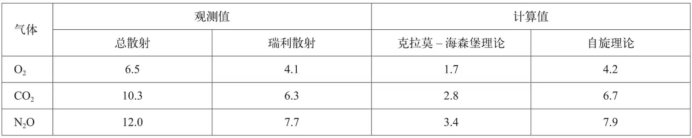

英文
英文拉曼，巴加万塔姆
编者按
钱德拉塞卡拉·文卡塔·拉曼和巴加万塔姆最近公布的实验结果证明光子带有一个单位的内禀角动量。在随后的几周内，他们通过改进实验技术得到了更为精确的结果，本文中报告了这些结果。他们用实验测量了光散射在一种液体中的解偏振现象。他们在去除了以前实验中由于容器壁的光散射所造成的误差之后指出：用假设光子在量子力学中的自旋为1的理论来解释实验结果要比假设光子没有自旋的理论更精确。 英文
我们在最近发表的一篇同名文章中[1]，描述并讨论了我们的实验结果，即光量子具有一个玻尔角动量单位的内禀自旋。从那篇文章发表到现在已经过去了4周，我们的实验技术在得到更高的精确度方面又有了很大改进。我们似乎有必要立即把最新的实验结果发表出来，而这新的实验结果也证实了上述结论。 英文
如从前的文章所提到的那样[2]，用光谱法可以将单色光的瑞利散射从液体中由分子转动产生的变频散射中分离出来，我们的实验就是要确定瑞利散射解偏振降低的程度。我们对以前实验装置的一个重要改进是使用了汞弧光点光源，这样我们就可以得到一束与观察者方向严格垂直的高强度单色光。在气体散射很弱的情况下，由容器壁产生的寄生亮度将导致严重的实验误差。我们通过在钢的十字形腔中对气体加压，而这种十字形腔可用适当方式确保处于黑暗的背景中，从而成功地降低了这种误差。利用放置于狭缝前的一个大号尼科尔棱镜和光谱仪，我们可以用照相法将散射光解偏振的数值确定下来。根据底片黑度的史瓦西公式，我们可用尼科尔棱镜上产生相同光谱强度的两个不同位置的曝光次数计算出散射光横向偏振分量和纵向偏振分量的比值。 英文
在光谱仪上交替使用窄缝和宽缝，可以分别得到瑞利散射和总散射的解偏振百分比率。下表给出了O2、CO2以及N2O气在加压条件下的相关数据：
表：解偏振百分比率

我们在第一列中给出了用光谱学方法观测得到的总散射解偏振比率，其数值与用其他方法得到的最佳结果十分吻合。第二列中给出的是观测到的瑞利散射解偏振比率，第三列是根据克拉莫–海森堡色散理论计算得到的数值，而第四列中的数据是由我们文章中讨论的光子自旋理论计算出来的。可以看到，第二种理论给出的数值与实验结果非常一致。 英文
（王静 翻译；赵见高 审稿）